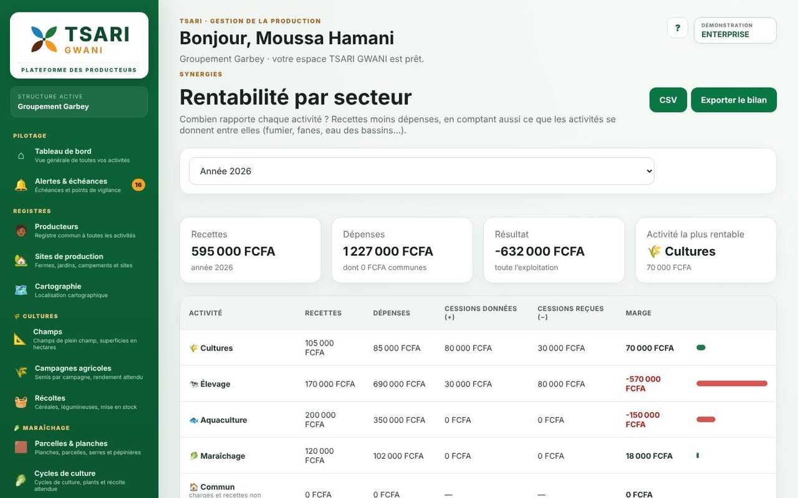

Ku tsara da kyau.Ku samar da yawa.Ku sami riba.
Ko babu intanet. Domin ƙungiyoyin haɗin gwiwa, gonaki, ƙungiyoyi masu zaman kansu, ayyukan raya ƙasa da ma'aikatun fasaha: a rubuta komai, a bibiyi komai, a ƙirga komai, a kwamfuta, ko babu intanet.

TSARI GWANI
Dukan ayyukanku a manhaja ɗaya: tushe ɗaya (manoma, rumbuna, tallace-tallace, kuɗaɗe), alaƙar da ke tsakanin ayyuka (taki na ciyar da gona, ruwan tafki na ban ruwan lambu…) da sakamakon kowane aiki.
TSARI AGRICULTURE
Manoma, gonaki, filaye da wurinsu a taswira, amfanin gona a kowace damina, girbi, kayan noma, rumbuna, tallace-tallace da kuɗaɗe.
TSARI ÉLEVAGE
Makiyaya, garken dabbobi, lafiya da allurar rigakafi, haihuwa, auna nauyi, ciyarwa, wuraren kiwo da amfani.
TSARI AQUACULTURE
Tafkuna da keji, rukunin kifi, ingancin ruwa, ƙyanƙyasa, girma, ciyarwa da girbi.
TSARI MARAÎCHAGE
Filaye da kunyoyi, iri da wurin renon shuka, kariya, ban ruwa, taki da girbi a jere.
Tsara, bibiya, sayarwa.
Duk abin da ƙungiya, gona ko aiki ke yi, a wuri ɗaya.
Dukan manomanku, gonaki, dabbobi da tafkuna a wuri ɗaya.
Rajistar membobi, wuraren samarwa da taswirar gonakinku, ko a ƙauye ba tare da sabis ba.
- Rajista ɗaya ga dukan ayyuka
- Taswirar gonaki da wuraren kiwo
- Daidai da ƙasarku: kuɗi, yankuna, lokuta

Faɗakarwa na gaya muku abin da za ku yi, da lokacin.
Alluran rigakafi, magani, abinci, ƙarancin kaya, wa'adi: TSARI yana lissafawa yana tunatar da ku. Babu abin da za a manta.
- Faɗakarwa da wa'adi kai tsaye
- Ana bibiyar lafiya, girma da girbi
- Mai ba da shawara na TSARI: shawarwari daga alkaluman ku

Kaya, tallace-tallace da rahotanni a shirye ga abokan hulɗa.
Kun san abin da ya rage a rumbu, abin da kuka sayar da ribar kowane fanni. Rahoto yana fitowa da danna ɗaya.
- Kaya, tallace-tallace, ƙiyasi da takardun kuɗi
- Riba ga kowane fanni
- Rahotannin PDF da Excel ga masu tallafi

Ku ga TSARI da idanunku
Hotunan manhajar da bayanan misali (an nuna da Faransanci; akwai Turanci da Hausa). Taɓa hoto don ƙara girmansa.
Ku yi lissafin da kanku.
Lissafi biyu masu sauri don ganin inda kuke. Sakamakon ƙiyasi ne: TSARI yana yin waɗannan lissafin kai tsaye, da ainihin alkaluman ku, ga dukan aikinku.
Lissafi na nuni, a wayarku ko kwamfutarku: ba a aika komai.
Gurabun gwaji 10
Ga abokan cinikinmu 10 na farko, shigarwa da horo a wurin kyauta ne. A madadin haka, za ku ba mu ra'ayinku bayan wata ɗaya na amfani.
Ina ajiye gurbina Tayi ne ga ƙungiyoyi 10 na farko. Farashin lasisi bisa ƙiyasi.- Shigarwa a kwamfutocinku
- Horar da ma'aikatanku a wurin
- Bibiya a watan farko
- Ra'ayinku yana taimaka mana inganta TSARI
Farashi daidai da ƙungiyarku
Kowace ƙungiya da irin tata. Farashin ya dogara da manhajar, yawan kwamfutoci da ayyuka, da horon da kuke so. Faɗa mana buƙatarku: za mu aiko muku da ƙiyasin farashi na musamman cikin awa 48.
| Salo | Domin wa |
|---|---|
| START | Fara aiki a sauƙaƙe |
| GESTION | Gudanarwa ta yau da kullum |
| PRODUCTION | Bibiyar dukan samarwa |
| INTELLIGENCE | Nazari da hasashe |
| ENTERPRISE | Manyan ƙungiyoyi |
Ƙiyasin kyauta ne, babu wani alƙawari.
Ku ga TSARI cikin minti 20
A gidanku, a ofishinku ko ta bidiyo. Ku bar bayananku: za mu tuntuɓe ku cikin awa 24.
- Shigarwa a kwamfutocinku
- Horar da ma'aikatanku a wurin
- Bibiya a watan farko
An ƙirƙira a Nijar, domin manoman Sahel
TSARI ya samo asali ne daga wani abu mai sauƙi: a ƙungiyoyin haɗin gwiwa, ayyuka da gonakin Sahel, ana rubuta adadin gonaki, garkuna da kayayyaki a cikin littattafai har yanzu. Suna ɓacewa, kuma babu wanda ya san ainihin abin da yake samarwa, abin da ke ajiye ko ribar da yake samu.
Saboda haka, a Yamai, mun ƙirƙiri manhajoji masu aiki ba tare da intanet ba, da harshen manoma (Faransanci, Turanci, Hausa) kuma ana biya sau ɗaya kawai. Ba kayan aiki na waje ba: kayan aiki da aka tsara domin gero, wake, shanu, kifin tilapia da albasa.
— Abdoulaye Ali, Babban Darakta na TSARI
Duk abin da kuke son sani
Mene ne TSARI?
Jerin manhajoji 5 na gudanar da noma da kiwo (TSARI GWANI, Noma, Kiwo, Kiwon kifi, Lambu) da manhajar waya ta shawara. Suna rubuta mambobi, gonaki, dabbobi, tafkuna, girbi, kayayyaki, sayarwa da kuɗi, sannan su fitar da adadi da rahotanni.
Ana buƙatar intanet?
A'a. Manhajojin suna aiki gaba ɗaya ba tare da intanet ba. Ana amfani da intanet ne kawai, idan akwai, don karɓar sabuntawa.
A kan wane na'ura?
A kan kwamfuta ta Windows ko Mac. Manhajar waya ta TSARI kuma tana aiki a wayar Android.
Da wane harshe?
Faransanci, Turanci da Hausa. Kowane mai amfani yana zaɓar harshensa.
Nawa ne farashi?
Farashin ya dogara da manhajar, salo, yawan kwamfutoci da horo. Ana bayarwa bisa ƙiyasi, kyauta kuma babu alƙawari, cikin awa 48. Ana biyan lasisi sau ɗaya: babu biyan wata-wata.
Zan iya gwadawa kafin saya?
Eh: gwaji kyauta na kwana 14 idan kun sauke manhajar. Ƙungiyoyin gwaji na iya samun lokacin gwaji mafi tsawo.
Ina bayanaina suke?
A kwamfutarku, ba a intanet ba. Manhajar tana yin ajiya kowace rana; muna ba da shawarar ku kwafa ta a filasha (USB) ma.
Idan na canza kwamfuta fa?
Bayananku suna tafiya tare da ajiyar. Ana ba da sabon lasisi don sabuwar kwamfutar bisa sharuɗɗa masu sauƙi.
Wa zai shigar da kuma horar da ma'aikatana?
TSARI ko ɗaya daga cikin dillalanmu, a wurinku. Ga ƙungiyoyin gwaji 10, shigarwa da horo kyauta ne.
Kuna aiki a Najeriya da sauran wurare?
Eh. Manhajojin suna da Turanci da Hausa, kuma muna gina cibiyar dillalai a Najeriya da Yammacin Afirka.
Ku sayar da TSARI a yankinku
Masana kwamfuta, masu ba da shawara kan noma, likitocin dabbobi, shaguna, matasa masu digiri: ku shiga cibiyar TSARI a Nijar, Najeriya da Yammacin Afirka.
Ina son zama dillali- Kwamitin kuɗi a kan kowane lasisin da aka sayar
- Horo kan manhajar da kuma yadda ake nunawa
- Takardun talla da kayan sayarwa
- Lambar abokin hulɗa domin abokan cinikinku
Daga gwaji zuwa lasisi
Kuna da tambaya, kuna son ƙididdigar farashi, ko nuni?
Ku kira mu, ku rubuto mana, ko ku ziyarce mu a Yamai. Muna amsawa da sauri, da mafita da ta dace da yanayinku.